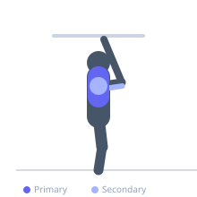
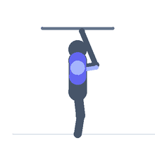

Exercise guide / Korean Dips / Behind-the-Back Dips
Korean Dips / Behind-the-Back Dips
Korean dips are a highly specialized calisthenics exercise in which the hands grip a bar behind the body with the palms facing backward, and the lifter dips downward in front of the bar. This unusual positioning places tremendous stretch on the chest and anterior shoulder, requires significant shoulder flexibility, and targets the lower pectoral fibers in a range of motion not achievable in standard dips.
Primary muscles
pectoralis major sternal
Secondary muscles
pectoralis major clavicular
triceps long head
deltoid posterior
Stabilizers
subscapularis
infraspinatus
Equipment
Dip Bars / Dip Station
Optional
Gymnastic Rings


Starting position
- Sit on a low parallel bar or sturdy surface, gripping the bar behind the hips with palms facing back and fingers pointing away. Slide the hips off the bar in front, body hanging in front of the bar.
Setup
- This exercise requires significant shoulder extension and external rotation flexibility. Begin by practicing shoulder bridge stretches and passive hangs before attempting Korean dips.
Steps
- Step 1: Grip the bar behind the hips with palms facing backward, fingers forward.
- Step 2: Extend the arms to lift the hips and hang the body in front of the bar.
- Step 3: Slowly lower the body downward by bending the elbows, feeling the chest and shoulder stretch.
- Step 4: Lower as far as shoulder flexibility comfortably allows.
- Step 5: Press back up by extending the arms, returning to the starting position.
Coaching cues
- Warm up the shoulders extensively before this
- Feel the chest open as you lower
- Respect your flexibility — this is a long-term progression
Breathing
- Inhale as you lower. Exhale as you press back up.
Range of motion
- Lower only as far as shoulder flexibility allows without pain. Even a small range of motion provides training stimulus for this unique position.
Tempo
- 3-1-2-0
Common mistakes
- Attempting this exercise without adequate shoulder flexibility
- Lowering past the point of safe shoulder range of motion
- Gripping too wide, increasing shoulder impingement risk
Safety
- This exercise is contraindicated with shoulder impingement or anterior instability
- Build shoulder extension flexibility over weeks before attempting
- Start with a very limited range of motion and progress slowly
- Have a spotter on standby in case of shoulder cramping
Training
- strength: 3–8 reps
- hypertrophy: 5–12 reps
- strength: 3–4 sets
- Rest: {'strength': 180, 'hypertrophy': 120}